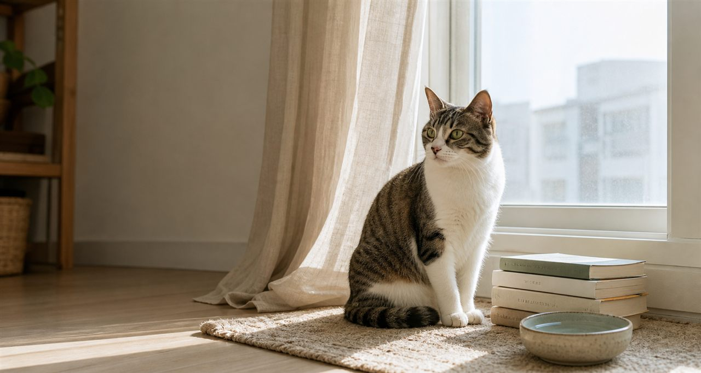

지식의 관계 지도를 만드는 일
냥톨로지에서는 하악질, 구토, 합사 같은 주제를 신호, 원인 후보, 돌봄 행동, 책 챕터와 연결한 지도입니다.

Single HTML Manual
`catbook/` 프로젝트 폴더를 기준으로 리서치, 문체 설계, 원고 빌드, 웹 구현, 검증까지 이어지는 제작 프로세스를 정리한 동적 매뉴얼입니다. 최신 냥톨로지 적용 흐름, RDF/OWL 검증 상태, 샘플 질의 예시도 함께 추적합니다.
Production Map
각 단계는 실제 폴더의 파일과 연결됩니다. 검색어나 필터를 바꾸면 단계 카드와 산출물 목록이 함께 좁혀집니다.
Ontology Application
공개 메타와 콘텐츠 아틀라스를 SQLite SSOT로 묶고, JSON/RDF/OWL 산출물로 웹 탐색과 원고 판단에 함께 사용합니다. 초보자 질문에서 출발해 행동 신호, 건강 관찰, 돌봄 행동, 책 챕터, 근거 콘텐츠를 연결합니다.
SSOT Files
catbook/data/catbook_ontology.sqlite
catbook/research/cat_ontology_graph.json
catbook/data/catbook_rdf_status.json
Plain Language Glossary
아래 단어들은 복잡한 기술 이름처럼 보이지만, 이 매뉴얼에서는 고양이 콘텐츠 지식을 같은 기준으로 저장하고 검증하고 찾아보는 장치로 이해하면 됩니다.
냥톨로지에서는 하악질, 구토, 합사 같은 주제를 신호, 원인 후보, 돌봄 행동, 책 챕터와 연결한 지도입니다.
RDF는 “하악질은 거리 요청 신호다”처럼 주어-관계-대상으로 사실을 적고, OWL은 그 사실들이 어떤 분류와 규칙을 따르는지 정리합니다.
Turtle은 RDF 관계를 사람이 보기 쉽게 적은 파일 형식이고, OWL 파일은 검증 도구가 냥톨로지의 구조를 읽도록 제공하는 의미 모델입니다.
필수 이름이 빠졌는지, 노드 타입이 맞는지, 위험 안내 관계가 제대로 붙었는지 확인하는 품질 검사표입니다.
“구토와 연결된 관찰 항목은 무엇인가?”, “둘째 고민은 어떤 행동 카드로 이어지는가?” 같은 질문을 RDF 그래프에 던지는 질의 언어입니다.
어떤 노드가 더 큰 분류에 속하거나 같은 의미 규칙을 공유하면, 직접 적지 않은 연결도 가볍게 계산해 검증에 활용합니다.
Sample 01
성격 판정 대신 거리 요청 신호로 읽고, 접근을 멈춘 뒤 퇴로와 시간을 확보하는 대응으로 연결합니다.
Sample 02
건강 관찰 노드는 진단 결론으로 가지 않고 횟수, 내용물, 활력, 반복성을 기록해 상담 준비로 보냅니다.
Sample 03
관계/합사 질문은 빠른 결론 대신 첫째의 선택권, 분리 공간, 천천히 소개하는 루틴으로 변환합니다.
Artifact Ledger
실제 제작에 필요한 핵심 파일만 추렸습니다. 공용 CSS나 JS 없이도 이 매뉴얼은 단독으로 동작하지만, 아래 파일들은 catbook 제작 결과를 이해하고 재생성하는 기준점입니다.
Local Runbook
루트 폴더 `c:\Users\HANA\Desktop\gemini\jarvis` 기준입니다. 공개 배포, 외부 전송, 저작권 판단은 별도 승인 대상입니다.
Jarvis 루트에서 정적 서버를 열어 `catbook/web/*.html`을 확인합니다.
python -m http.server 8787 --bind 127.0.0.1
같은 네트워크 안에서 확인할 때 쓰는 catbook 전용 서버입니다.
powershell -ExecutionPolicy Bypass -File catbook/scripts/start-intranet-preview.ps1 -Port 8790 -MaxPort 8800 -Restart
이 파일을 서버로 열 때의 경로입니다.
http://127.0.0.1:8787/catbook/web/production-process-manual.html
2D 지식그래프와 3D 살쾡이자리 시각화를 로컬 서버에서 확인합니다.
http://127.0.0.1:8787/catbook/web/ontology.html
온톨로지 재생성, Python 문법 검사, RDF/OWL/SHACL/SPARQL 검증을 한 번에 실행합니다.
powershell -ExecutionPolicy Bypass -File catbook/scripts/validate-rdf-owl.ps1 -SkipInstall
Operator Checklist
체크 상태는 현재 브라우저에 저장됩니다. 같은 파일을 다시 열어도 이어서 확인할 수 있습니다.
Risk Shield
이 프로젝트는 공개 콘텐츠를 참고한 독립 창작물입니다. 원문 대본 저장, 말투 모방, 의료 단정, 공개 배포는 별도 검토 없이 진행하지 않습니다.
자막 원문과 진행자 문체를 복제하지 않고, 비문장형 분석 신호와 독립 원고만 남깁니다.
진단과 처방처럼 단정하지 않고 관찰 신호, 기록, 상담 기준으로 표현합니다.
탐지 회피 목적 지침이 아니라 장면 정확성, 안전성, 독립성을 높이는 편집 스킬만 사용합니다.
판매, 배포, 외부 공유, 상업 이미지 사용은 Human Conductor 승인 뒤 진행합니다.
Process